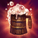

- Barril de Bebida
Uma bebida para os fortes, esse barril de 50% de teor alcóolico é nossa bebida mais potente. É o carro chefe da casa.
Preço de R$276,00

Uma bebida para os fortes, esse barril de 50% de teor alcóolico é nossa bebida mais potente. É o carro chefe da casa.
Preço de R$276,00
Uma dose moderada do nosso barril de bebida especial da casa. Possui 50% de teor alcóolico .
Preço de R$92,00
Um drink extremamente saboroso e de difícil fabricação, esse pequeno copo de Sangue de Vampiro pode te derrubar facilmente com 27.5% de teor alcóolico .
Preço de R$50,20
"Se é você que vai pagar, eu tô dentro!"
Durante a Happy Hour, essa bebida tem um refill grátis disponível. Seus 18.7% de teor alcóolico permitem o usuário repetir o drink sem se sentir muito alcoolizado.
Preço de R$30,25

Uma garrafa envelhecida de rum antigo. Dizem dar ao usuário poderes mágicos... Possui 23.9% de teor alcóolico.
Preço de R$64,50